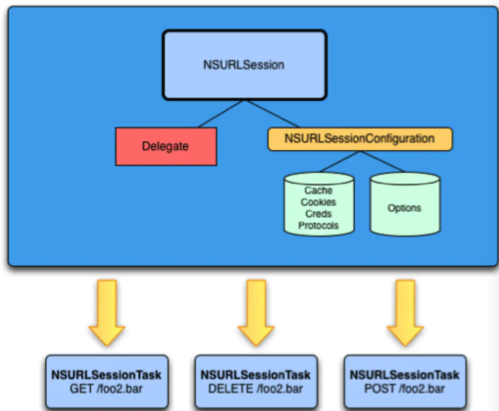
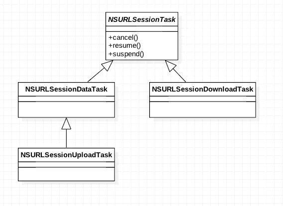
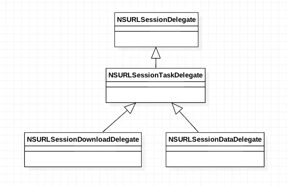

一、概述
NSURLSession在2013年随着iOS7的发布一起面世，苹果对它的定位是作为NSURLConnection的替代者，然后逐步将NSURLConnection退出历史舞台。现在使用最广泛的第三方网络框架：AFNetworking、SDWebImage等等都使用了NSURLSession。
在WWDC 2013中，Apple的团队对NSURLConnection进行了重构，并推出了NSURLSession作为替代。NSURLSession将NSURLConnection替换为NSURLSession和NSURLSessionConfiguration，以及3个NSURLSessionTask的子类：NSURLSessionDataTask, NSURLSessionUploadTask, 和NSURLSessionDownloadTask。

NSURLSessionTask及三个子类继承关系：

NSURLSessionTask及其子类
NSURLSessionTask本身是一个抽象类，在使用的时候，通常是根据具体的需求使用它的几个子类
NSURLSessionDataTask可以用来发送常见的Get，Post请求，既可以用来上传也可以用来下载
NSURLSessionDownloadTask可以用来发送下载请求，专门用来下载数据
NSURLSessionUploadTask可以用来发送上传请求，专门用来上传数据
二、NSURLSession的使用
NSURLSession 本身是不会进行请求的，而是通过创建 task 的形式进行网络请求（resume() 方法的调用），同一个 NSURLSession 可以创建多个 task，并且这些 task 之间的 cache 和 cookie 是共享的。NSURLSession的使用有如下几步：
- 第一步：创建NSURLSession对象
- 第二步：使用NSURLSession对象创建Task
- 第三步：启动任务
创建NSURLSession对象
NSURLSession对象的创建有如下三种方法：
（1）直接创建
1 | NSURLSession *session = [NSURLSession sharedSession]; |
（2）配置后创建
1 | [NSURLSession sessionWithConfiguration:defaultSessionConfiguration]; |
（3）设置加代理获得
1 | // 使用代理方法需要设置代理,但是session的delegate属性是只读的,要想设置代理只能通过这种方式创建session |
关于NSURLSession的配置有三种类型：
1 | //默认的配置会将缓存存储在磁盘上 |
使用NSURLSession对象创建Task
NSURLSessionTask的创建要根据具体需要创建相应类型的Task。
（1）NSURLSessionDataTask
通过request对象或url创建：
1 | - (NSURLSessionDataTask *)dataTaskWithRequest:(NSURLRequest *)request; |
通过request对象或url创建，同时指定任务完成后通过completionHandler指定回调的代码块：
1 | - (NSURLSessionDataTask *)dataTaskWithRequest:(NSURLRequest *)request completionHandler:(void (^)(NSData *data, NSURLResponse *response, NSError *error))completionHandler; |
（2）NSURLSessionUploadTask
通过request创建，在上传时指定文件源或数据源：
1 | - (NSURLSessionUploadTask *)uploadTaskWithRequest:(NSURLRequest *)request fromFile:(NSURL *)fileURL; |
通过completionHandler指定任务完成后的回调代码块：
1 | - (NSURLSessionUploadTask *)uploadTaskWithRequest:(NSURLRequest *)request fromFile:(NSURL *)fileURL completionHandler:(void (^)(NSData *data, NSURLResponse *response, NSError *error))completionHandler; |
（3）NSURLSessionDownloadTask
下载任务支持断点续传，第三种方式是通过之前已经下载的数据来创建下载任务：
1 | - (NSURLSessionDownloadTask *)downloadTaskWithRequest:(NSURLRequest *)request; |
同样地可以通过completionHandler指定任务完成后的回调代码块：
1 | - (NSURLSessionDownloadTask *)downloadTaskWithRequest:(NSURLRequest *)request completionHandler:(void (^)(NSURL *location, NSURLResponse *response, NSError *error))completionHandler; |
我们在使用三种 task 的任意一种的时候都可以指定相应的代理。NSURLSession 的代理对象结构如下：

NSURLSessionDelegate – 作为所有代理的基类，定义了网络请求最基础的代理方法。
NSURLSessionTaskDelegate – 定义了网络请求任务相关的代理方法。
NSURLSessionDownloadDelegate – 用于下载任务相关的代理方法，比如下载进度等等。
NSURLSessionDataDelegate – 用于普通数据任务和上传任务。
启动任务
1 | // 启动任务 |
三、GET请求与POST请求
1、GET 请求
1 | //1、创建NSURLSession对象 |
2、POST请求
1 | //1、创建NSURLSession对象 |
四、文件的上传
我们可以使用NSURLSessionUploadTask进行文件的上传，使用NSURLSessionUploadTask文件上传共有两种方法：
方法1：
1 | NSURLSessionUploadTask *task = |
方法2：
1 | [self.session uploadTaskWithRequest:request |
五、文件的下载
我们可以使用NSURLSessionDownloadTask实现文件的下载。NSURLSession使用代理方法也可以实现大文件下载，但是它实现不了断点下载，所以一般不用。
1 | - (void)NSURLSessionDownloadTaskTest { |
参考链接
NSURLSession：https://www.jianshu.com/p/e798c6fe26ea